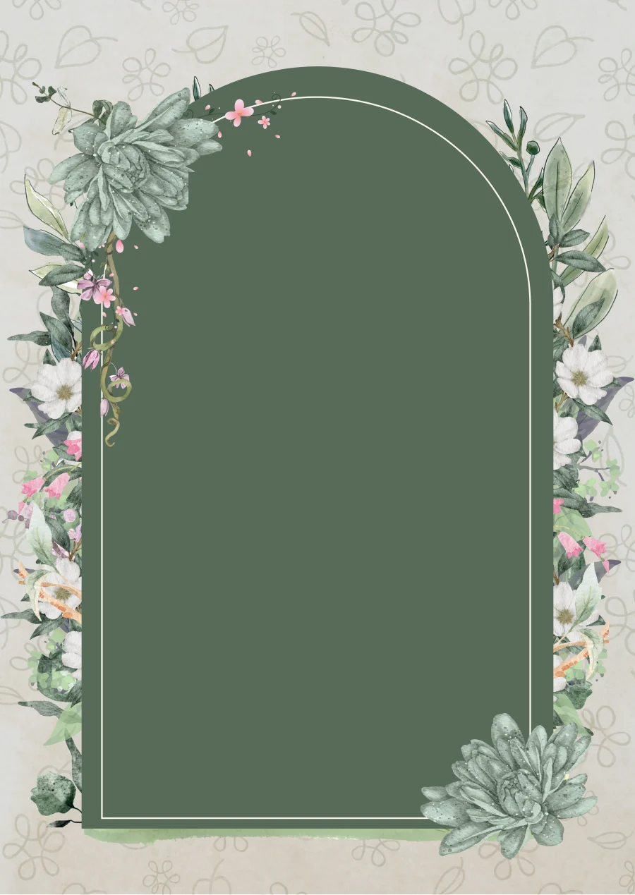
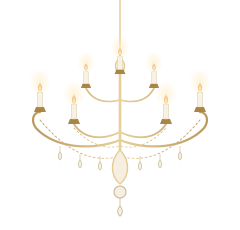

A musical evening for
Muhammed and Waad
Engagement Celebration05 · 11 · 2026
The invitation

When & Where

Save the date
Thursday, 5 November 2026
Starts at 6:00 PM
A musical evening for
Engagement Celebration05 · 11 · 2026


Save the date
Starts at 6:00 PM